Wednesday (2022) was primarily shot in and around Bucharest, Romania. Here we will show you the real-world locations of various places in the Wednesday universe in the order in which they were introduced in the show.
While we aim to reduce spoilers as much as possible, some location names or descriptions may reveal plot points from the show. To help readers avoid spoilers, we may revisit real-world locations multiple times and will clearly label it when we move on to the next episode.
The show was initially slated to be filmed in Toronto, Canada.
While we provide location information for various real world locations used for filming Wednesday, please be aware that some places are private property. Please do not enter any location without permission.
It can be fun to own a piece of your favorite media, but remember that we want everyone to be able to share in our passion. Therefore, please do not remove any items not clearly marked as merchandise or cause damage at any of these locations.
All locations should be treated with respect and care.
This document is broken up by episode, providing information and links to any locations introduced in that episode. We only revisit previously seen locations to point out information relevant to new plot points or relevant parts of the location.
In Google Maps Street View, some locations have views from several different spots. These can be viewed by double-clicking on the blue circles in the map square in the lower left corner.
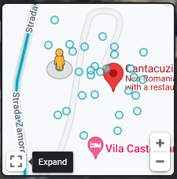
For information on this document or to suggest edits/additions, please contact @totengeist on Discord: discord.gg/nevermoreacad
The day after the Wednesday premiere, Netflix Romania posted a video containing comparison shots of some of the locations listed below. Be aware, there are some minor visual spoilers.
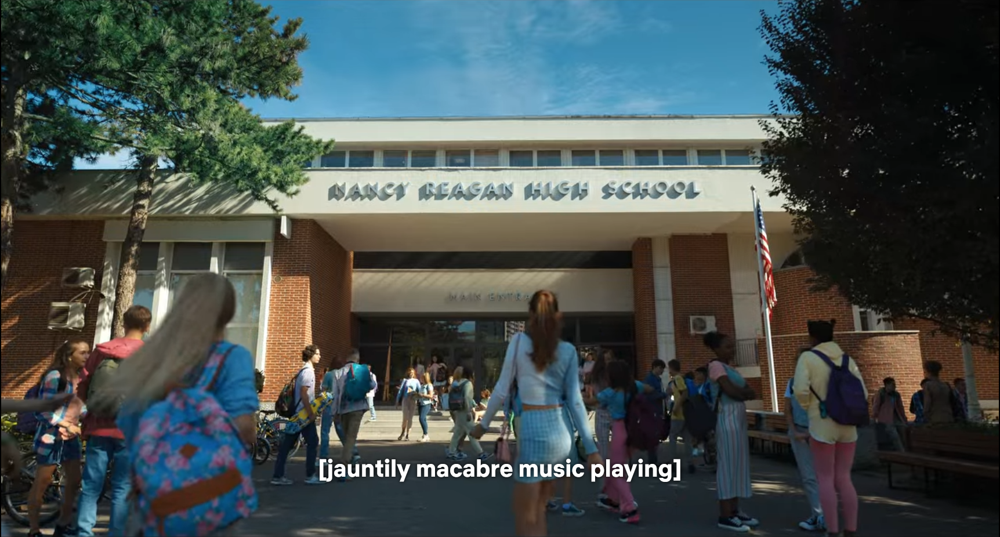 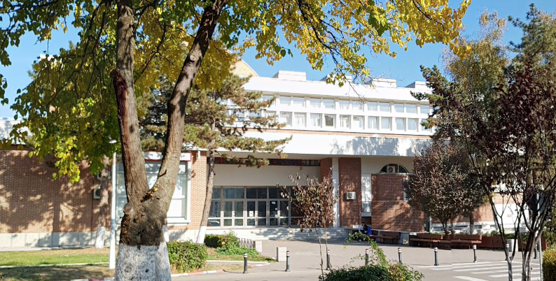
The very first scene of the show shows us Wednesday’s high school, likely located somewhere in the state of New Jersey. The exterior is a building at the Politehnica University of Bucharest.
The license plate on the Addams family’s car is registered in the state of New Jersey. Westfield, New Jersey was the hometown of Charles Addams and an inspiration for the original Addams Family comics. The Addamses also lived in the outskirts of New Jersey in the 2019 animated film.
Website - Wikipedia - Google Maps Street View
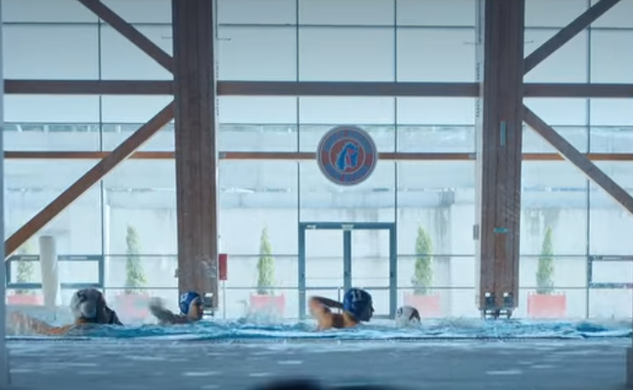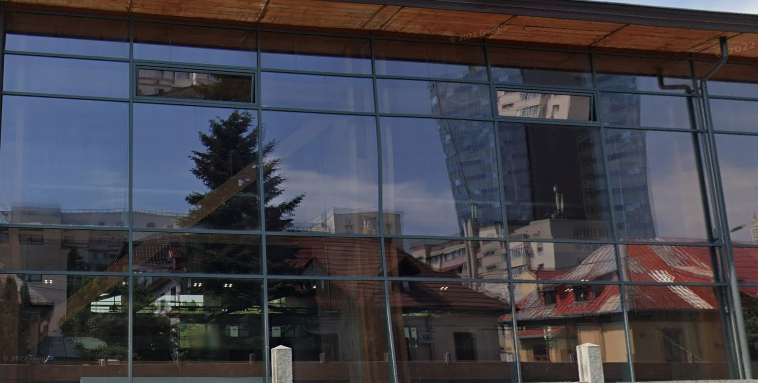
The swimming pool at Nancy Reagan High School is the Bazinul de Înot Dinamo swimming pool in Bucharest, Romania. While you can’t see the pool's interior on Google Maps, you can recognize the structure of the beams and windows.
Address: Șoseaua Ștefan cel Mare 7-9, București 020121, Romania
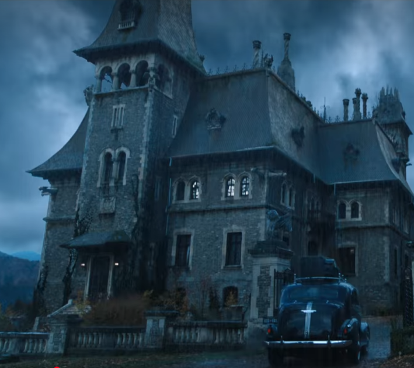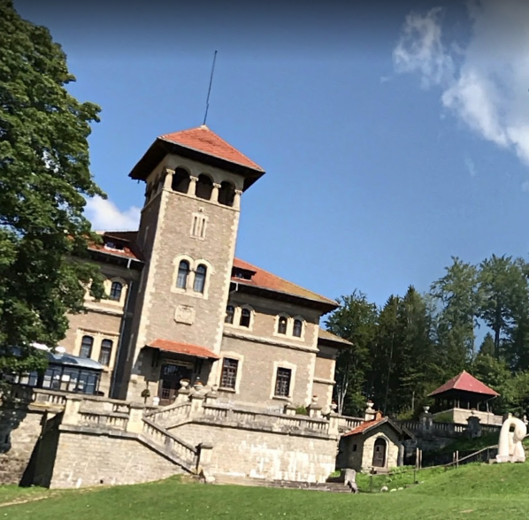
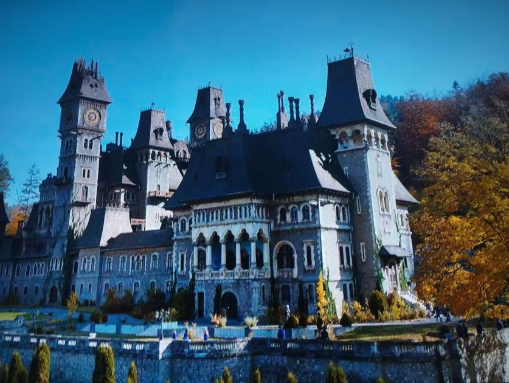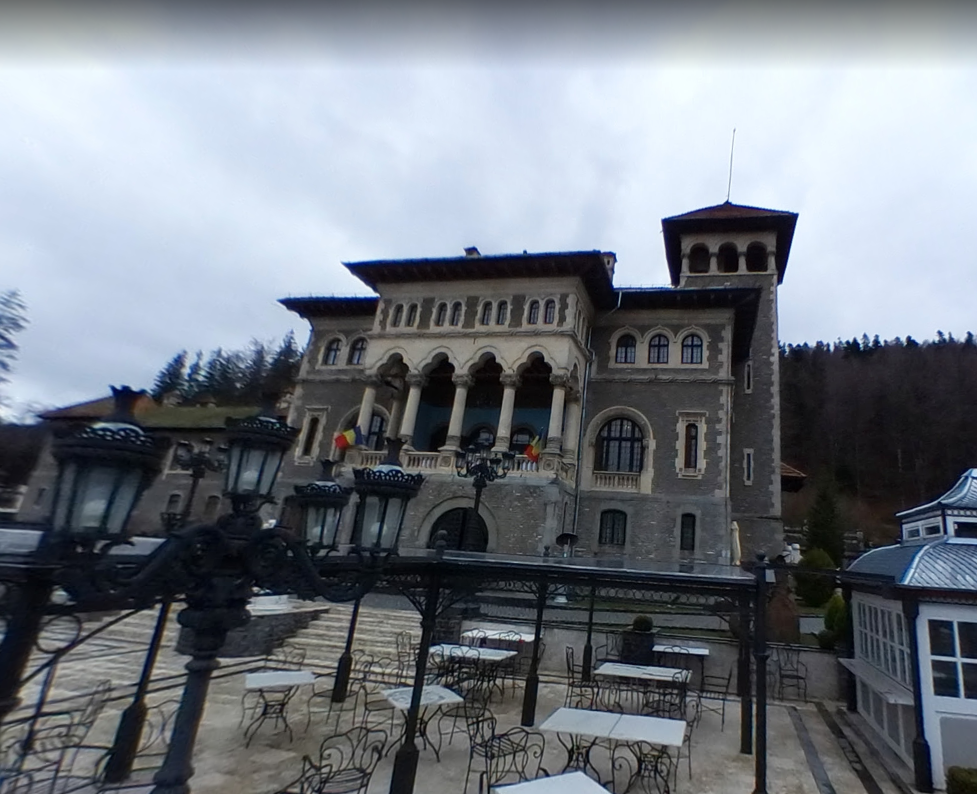
In-story location: Jericho, Vermont
Address: Strada Zamorei 1, Bușteni 105500, Romania
Grounds Walkthrough Video - Aerial Drone Footage Video
Website - Tours - Wikipedia - Google Maps Street View
Address: Calea Victoriei 115, București, Romania
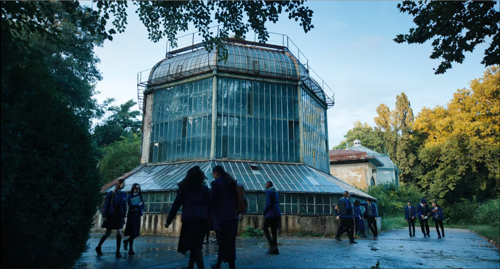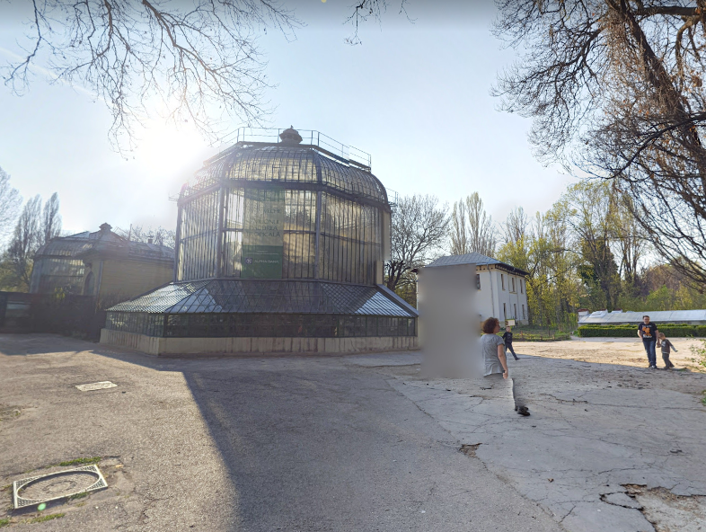
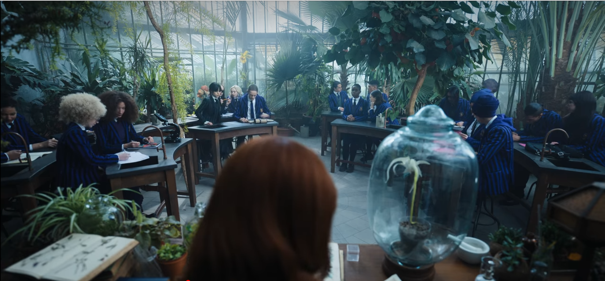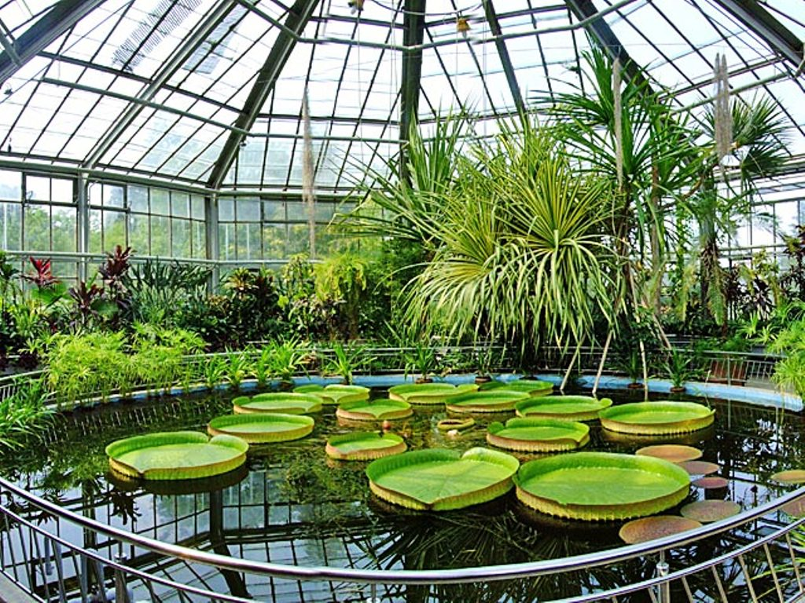
Address: Șoseaua Cotroceni 32, București, Romania
Address (Branesti Lake): Strada Oltului 26, Brănești 077145, Romania
Address (Domeniul Știrbey Buftea): Strada Știrbei Vodă 36, Buftea 070000, Romania
Google Maps Street View (Domeniul Știrbey Buftea)
Google Maps Street View (Branesti Lake)
Address: Sinaia 106100, Romania
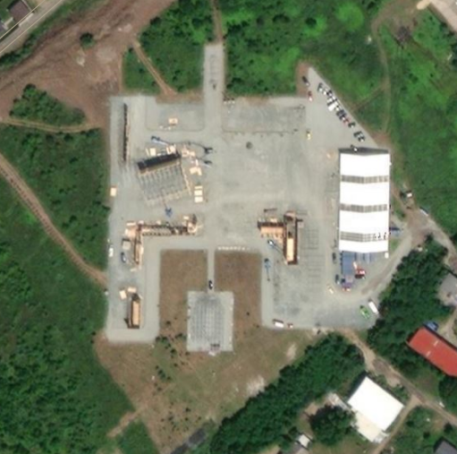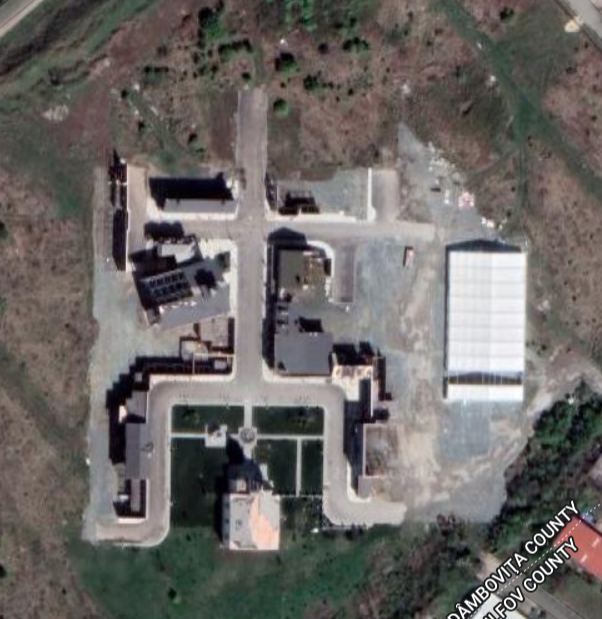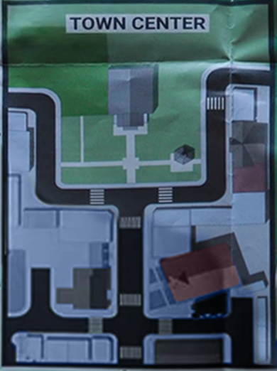
The town of Jericho is a fictionalized version of the real-world Jericho, Vermont with a different history. According to a map of Jericho seen in the show, Nevermore is located a few miles out of town. The Jericho Town Square is a filming location built on a back lot at the Bucharest Film Studios in Buftea.
Address: Strada Studioului 1, Buftea 070000, Romania
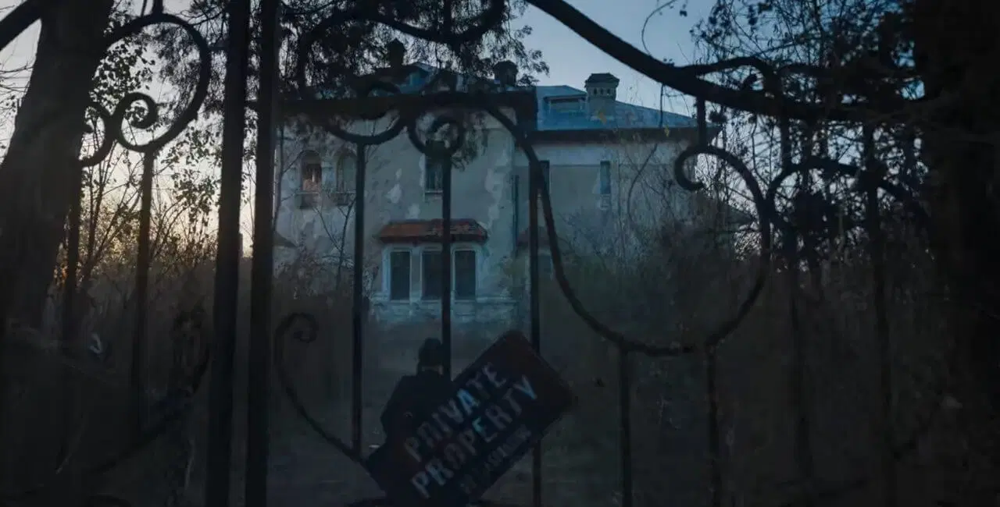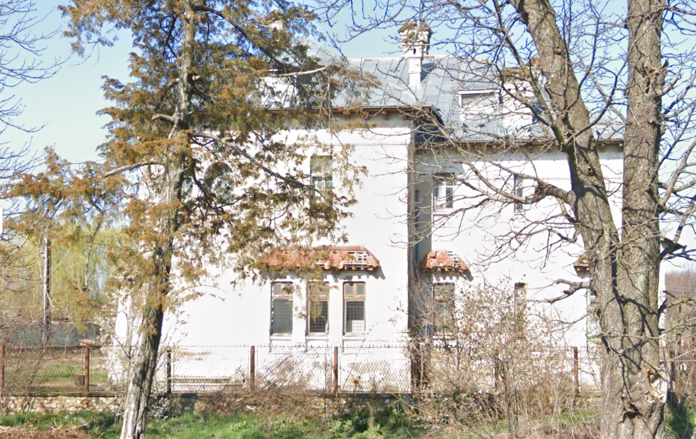
Once owned by Romanian painter Olga Greceanu, this manor in the Romanian country-side is the home of the Gates family on the outskirts of Jericho.
Address: Strada Eroilor 186, Bălteni 137126, Romania
| 0:10 | 0:12 | Nancy Reagan High School exterior |
| 0:12 | 1:50 | Nancy Reagan High School interior (unconfirmed building at Politehnica University of Bucharest) |
| 1:50 | 2:50 | Nancy Reagan High School swimming pool |
| 2:50 | 4:00 | Titles |
| 4:00 | 7:00 | Unconfirmed road; likely Transylvania, Romania |
| 7:00 | Unconfirmed forest |
| 0:50 | Nevermore Academy exterior | |
| 1:00 | Nevermore Academy interior | |
| 15:50 | Thornhill's classroom | |
| Raven Island | ||
| Burlington Station |
{kind=link}